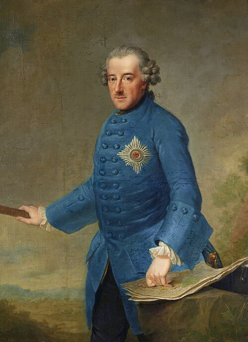
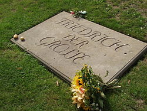

II. Friedrich

Johann Georg Ziesenis [de] tarafından portresi (1763)
II. Friedrich (Almanca: Friedrich II.; 24 Ocak 1712 - 17 Ağustos 1786); 1740 yılından
ölümüne kadar Prusya kralıydı. Prusya onun yönetimi altında topraklarını büyük ölçüde genişletti ve
Avrupa'da önemli bir askerî güç haline geldi. Askeri alandaki başarıları ve ülkesinin kalkınması
yolundaki çabalarından dolayı Büyük Friedrich (Friedrich der Große) adıyla anılır.
Büyük Friederich, Avusturya'nın Kutsal Roma İmparatorluğu'nun varisi olmasına karşı çıkıyordu.
Habsburg
Hanedanı'nın himayesi altında bulunan, dönemin önemli sanayi bölgelerinden birisi olan Silezya
topraklarında hak iddia etti ve 1740 yılında Silezya'ya savaş ilan ederek yaklaşık olarak yedi
haftada
toprakların neredeyse tamamını işgal etti.[1] 1744'te Bohemya'ya topraklarına saldırması sonucunda
Bavyera, Saksonya, Avusturya Prusya'ya savaş ilan etti. Ancak Friederich önderliğindeki Prusya
ordusu,
tüm düşmanların üstesinden gelmeyi başardı. Bu savaşın ardından 1745'te imzalanan barış anlaşması
ile
Prusya, kendisine Silezya topraklarında hak tanınması karşılığında işgal edilen bölgelerden geri
çekildi. Fakat imparatoriçe Maria Theresia yenilgiyi kabul edemeyerek müttefikleri Fransa ve Rusya
ile
toprakları geri alma konusunda görüşmeler yürütmeye başladı. Lakin 1756'da Friederich bu
görüşmelerden
haberdar oldu ve önce davranarak Saksonya ve Bohemya topraklarının önemli bir kısmını işgal etti ve
Prag'a muhasara düzenledi. Ardından Avusturya ve Rus imparatorluğu, Fransa krallığı ve İsveç
Prusya'ya
savaş ilan etti. Aldığı destekler sayesinde Avusturya ordusu, Prusya askerlerini işgal edilen
bölgelerden püskürtmeyi başardı ve 1763'te imzalanan barış anlaşması ile savaş sona erdi. Bu anlaşma
Prusya'ya ekonomik ve askeri açıdan büyük kazanç sağlayarak anlaşmadan büyük bir güç olarak
ayrılmasını
sağladı.
Adı geçen savaşlar beraberinde Prusya için büyük ekonomik sorunlar getirdi. Friederich, yaklaşık on
yıl
gibi bir süre zarfında ekonomiyi önemli ölçüde geliştirdi ve ordunun nüfusunu artırarak orduyu
güçlendirdi. Müteakip olarak 1772 yılında Polonya Krallığına haiz toprakların Avusturya ve Rusya ile
kendisi arasında paylaştırılması üzerine bir teklifte bulundu. Lakin bir gelecek yanıtı beklemeden
Polonya'nın kuzey topraklarını ilhak etti. Bunun ardından doğuda Ruslar ve batıda Avusturyalılar
Polonya
topraklarına işgallerde bulundular.
Hayatı
24 Ocak 1712'de Berlin'de doğdu. Prusya tahtının veliahtı Friedrich Wilhelm (1688-1740) ile İngiltere
kralı I. George'un kızı Sophie Dorothea'nın büyük oğluydu. Babası, dedesi ilk Prusya kralı I.
Friedrich'in (1657-1713) ölümü üzerine I. Friedrich Wilhelm adıyla kral oldu. Gençliğinde Frederick
savaş sanatından çok müzik ve felsefeyle ilgilenmiş, bu da otoriter babası I. Friedrich Wilhelm ile
çatışmasına yol açmıştır. Sert ve sıkı bir disiplinle yetiştirilen Friedrich, bu disiplinden
kurtulabilmek ve babasının Hermann von Katte ile olan ilişkisinde kendini baskılaması sebepleriyle
18 yaşındayken arkadaşları Teğmen Hans Hermann von Katte ve Teğmen Peter Karl Christoph von Keith
ile Büyük Britanya'ya kaçma girişiminde bulundu; ancak Keith'in son anda pişmanlık duyarak
yetkililere haber vermesi üzerine bu plan ortaya çıkarıldı. Friedrich, sevgilisi Katte'ın idamını
seyretmek zorunda bırakılarak cezalandırıldı.
1738 yılında mason oldu ve bu şekilde mason olan Fransız Aydınlanmacıları'yla tanıştı. Özellikle
Voltaire ile sık sık mektuplaştı bu şekilde Fransa'daki bu devrimci Aydınlanma hareketlerini takip
etti.
Hükümdarlığı
Babasının 31 Mayıs 1740'ta ölmesi üzerine tahta çıkan II. Friedrich, babasının çeşitli uygulamalarına
son verdi ve onun bin bir güçlükle kurduğu muhafız alayını dağıttı. 1740'ta Avusturya'ya bağlı
Silezya'yı işgal etmesi, Avusturya'yla savaşa girmesine yol açtı. Avusturya'nın içinde bulunduğu
durumdan (Avusturya Veraset Savaşı) faydalanan Friedrich, I. Silezya Savaşı olarak bilinen bu
savaştan Haziran 1742'de imzalanan Breslau Anlaşması'yla zaferle çıktı.
1744'te Avusturya'yla tekrar savaşa giren Friedrich, II. Silezya Savaşı olarak bilinen bu savaşta
Silezya'ya çekilmek zorunda kaldı, ancak Silezya'da yapılan 3 çarpışmayı kazandı. 1745'te imzalanan
Dresden Anlaşması'yla Silezya'nın büyük bir kısmını ele geçirdi.
Bu olaydan sonraki 11 yıl olaysız ve savaşsız geçti. Friedrich, ülkesinde çeşitli reformlar yaptı ve
ordusunu güçlendirdi.
1756'da patlak veren Yedi Yıl Savaşı (1756-63) süresinde Prusya ordusu başta ağır yenilgilere uğradı.
Hatta 1759'da başkent Brandenburg istila edildi. Ancak 1759'dan sonra şansı dönen Prusya ordusu,
düşmanlarını her cephede bozguna uğrattı. Ancak bu çarpışmalar Prusya ordusunun asker sayısını
önemli ölçüde azalttı. Rus Çariçesi Yelizaveta 1762'de ölünce, yerine geçen ve Friedrich'in hayranı
olan Çar III. Petro, Prusya'yla barış anlaşması yapmakla kalmadı, savaşta Rusya'nın ele geçirdiği
bölgeleri de geri verdi. Çar III. Petro'nun aynı yıl devrilmesine karşın, Prusya şimdi daha iyi
durumdaydı. İsveç'in de Prusya'yla barış anlaşması imzalayarak savaştan çekilmesinin ardından
Prusya'nın düşmanı olarak kalan Fransa ile Avusturya, 1763'te barış anlaşması imzalayarak savaştan
çekildiler ve Yedi Yıl Savaşı, Friedrich'in zaferiyle sonuçlandı.
Friedrich, savaştan sonra ülkenin refahı için harekete geçti. Merkantilist bir ekonomi politikası
izleyerek, devlet maliyesini güçlendirmeye çalıştı. Ancak bu amaçla koyduğu ağır vergiler, tepkiyle
karşılandı. Sanatçı ve yazarları koruyan ve kendisi de bir yazar olan Friedrich, ancak Alman yazar
ve sanatçıları sevmiyor, Fransız yazar ve sanatçılara büyük hayranlık duyuyordu.
Friedrich, ülke yönetiminde ve adalet işinde de başarılı oldu; ilk Alman yasa derlemesini hazırlattı
ve eğitim alanında çeşitli yenilikler yaparak, Prusya'nın eğitim alanında bütün dünyada 1. olmasını
sağladı. Francesco Algarotti, d'Argens, Julien Offray de La Mettrie gibi filozofları Berlin'e davet
etti. Ayrıca anadili Almanca yerine sıklıkla Fransızca kullanmayı tercih ediyordu.
Friedrich 17 Ağustos 1786'da öldüğünde, Prusya Avrupa'nın en önemli ülkelerinden sayılıyordu.
Friedrich'in ölümünden sonra yerine kardeşi August Wilhelm'in (ölümü 1758) oğlu II. Friedrich
Wilhelm (1744-1797) geçti.
Ölümü ve Mirası

Büyük Friedrich'in patateslerle süslenmiş mezarı, Sanssouci
Hayatının sonlarına doğru giderek daha yalnız bir yaşam biçimi benimsedi. Sanssouci'deki yakın
arkadaş çevresi yavaş yavaş yok oldu. Bu durum Friedrich'i giderek daha eleştirel ve keyfi hale
getirdi. Friedrich, aydın reformları ve askeri zaferleri sebebiyle Prusya halkı arasında mükemmel
ölçüde popülerdi. Berlin vatandaşları, idari veya askeri incelemelerden döndüğünde daima onu
alkışlarlardı. Prusya halkı tarafından "Der Alte Fritz" (Yaşlı Fritz) mahlası aldı ve bu lakap
mirasının bir parçası haline geldi. Friedrich, popülaritesine karşı pek bir önem beslemiyordu. Bu
sebeple "Marquises de Pompadour" (Fransız kraliyet metresinin adına bir gönderme) adını verdiği
köpeği (İtalyan Tazısı) ile vakit geçirmeyi tercih etti.[10] 60'lı ve 70'li yaşlarında astım, gut
ve diğer hastalıkları onu büyük ölçüde etkilemesine rağmen şafaktan önce uyanır, günde altı ila
sekiz fincan kahve içer (hardal ve tane karabiberle karıştırılmış) ve devlet işlerine verdiği önemi
mükemmel bir azimle devam ettirirdi.
riedrich 17 Ağustos 1786 sabahında, Sanssouci'deki çalışma odasındaki koltukta 74 yaşında öldü.
Yanında köpeğinin gömüldüğü Sanssouci'nin bağ terasında defnedilmesini istedi. Ancak yeğeni ve
halefi olan II. Friedrich Wilhelm, Potsdam Kilisesi'nde babasının yanına defnedilmesini emretti. II.
Dünya Savaşı'nın sonlarına doğru Alman diktatör Adolf Hitler, Friedrich'in tabutunun yıkımdan
korunması için bir tuz madenine saklanmasını emretti. 1946'da Amerika Birleşik Devletleri Ordusu
naaşı Marburg'a taşıdı ve 1953'te Friedrich ve babasının tabutları Burg Hohenzollern'e
nakledildi.
Ölümünün 205. yıldönümü olan 17 Ağustos 1991'de Friedrich'in tabutu, Prusya bayrağıyla örtülü ve
Bundeswehr onur muhafızları tarafından korunan bir şekilde Sanssouci'deki şeref mahkemesinde
bekletildi. Gece vaktinde Friedrich'in naaşı kendisinin ölmeden önce belirttiği gibi, gösterişten
uzak bir şekilde inşa ettirdiği kriptaya bağ terasında defnedildi. Mezarını ziyaret edenler,
Prusya'da patatesin yaygınlaşmasına sağladığı katkılar sebebiyle mezar taşına sık sık patates
bırakırlar.